4 months embedded inside Quickflows.ai — a real-time, constraint-aware coordination platform — designing the decision layer that assigns the right nurse to the right patient, every time.
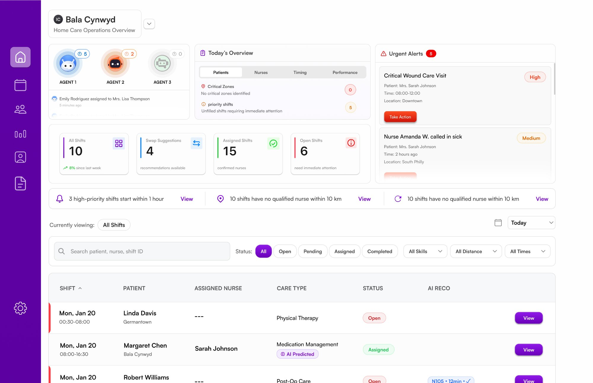
01 — Context
A care coordinator at a home healthcare agency may manage 200+ shifts in a single day. Each shift represents a patient — often elderly, often medically complex — who needs a specific type of nurse, at a specific address, at a specific time.
Nurses cancel. Patients have last-minute changes. Certifications expire. Travel distances make some assignments impossible. And every unfilled shift isn't a missed calendar entry — it's a 70-year-old who doesn't get their wound dressed today.
Quickflows.ai exists to solve this. It's a real-time platform that helps coordinators manage this operational complexity — and increasingly, automates parts of it through AI agents.
02 — Product Understanding
Most designers open Figma immediately. I didn't. Quickflows.ai runs on a complex entity graph — and any UI that doesn't reflect that underlying model would fail the people relying on it.
The core insight from this discovery phase shaped every screen I built afterward:
Quickflows.ai is not a scheduling tool. It's a decision-support system that continuously minimises the probability of unfilled or failed shifts under real-world constraints.
This distinction changes what every screen must communicate. It's not about showing a calendar — it's about surfacing the right action, at the right moment, with the right context to act confidently.
03 — Design Work
Organized not by delivery date, but by the natural flow of how a coordinator experiences the product — from overview, to shift action, to the people and systems underneath.
The login screen doubles as brand positioning. The left panel previews three core product capabilities — AI agents, shift timeline, and urgent alerts — establishing stakes before the user ever signs in. First impressions set expectations.
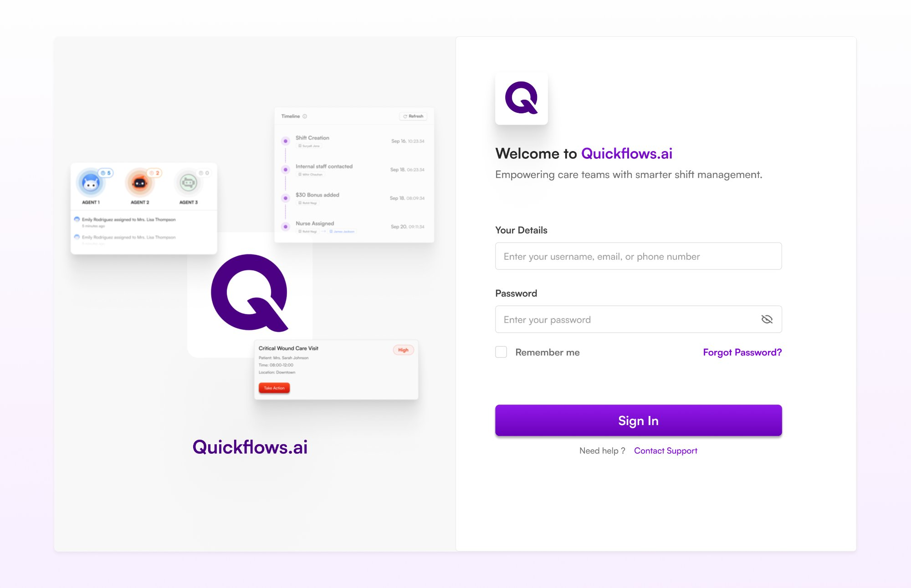
A coordinator opening the app needs to know in under 5 seconds: what's broken, what's at risk, what needs action. The layout is deliberately tiered by urgency — AI agent activity at top, key metrics in the middle, urgent alerts on the right rail, and the full shift table below for deeper investigation.
AI agent status bar — 3 autonomous agents with active task counts. Makes the system feel alive and auditable, not like a black box.
4 stat cards — all shifts, swap suggestions, assigned, open — each with trend indicators and contextual sub-labels for instant orientation.
Urgent alerts panel — High/Medium severity badges with patient name, time, and a "Take Action" CTA. Priority queue on the right rail, always visible.
Smart alert bar — pinned banner listing the 3 most critical issues (overdue shifts, no nearby nurses) with direct view links.
This is the product's most critical screen. A shift is either Filled or Unfilled — and the entire interface adapts to reflect which action is needed. Green says "you're covered." Red says "act now." The design language is non-negotiable.
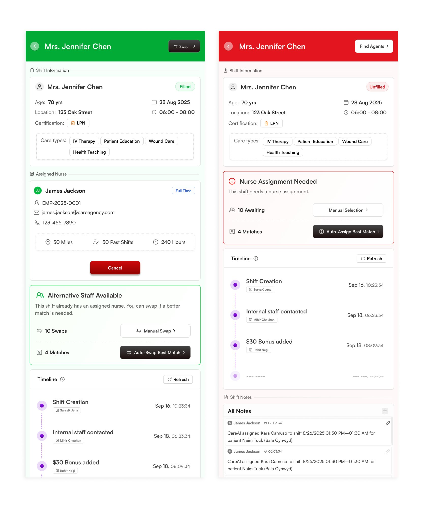
Header color = shift status. Green → filled ("Swap" available). Red → unfilled ("Find Agents" prominent). State is never ambiguous.
Filled state shows the nurse inline with a Cancel button. The "Alternative Staff Available" block lets coordinators upgrade without disrupting the existing assignment.
Unfilled state shows a red alert card with two clear paths — Manual Selection or Auto-Assign Best Match — letting coordinators choose their level of involvement.
Timeline in both states provides a living audit trail — who did what and when — transforming a static shift record into a decision history.
When a coordinator assigns or swaps a nurse, they need to evaluate candidates quickly under time pressure. The design challenge: surface enough information for a confident decision without creating cognitive overload. Three states, one panel.
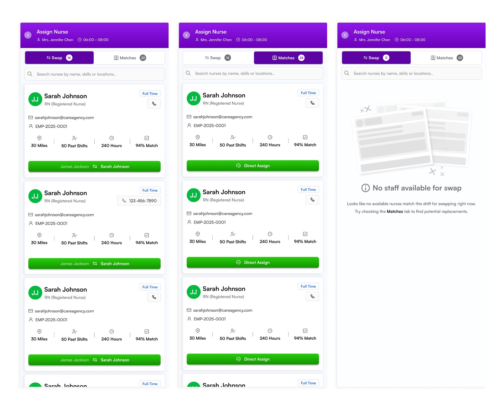
Swap vs Matches tabs split intent before the user sees a list. Swap replaces the current nurse; Matches surfaces AI-ranked best-fit candidates.
4 decision signals only — distance, past shifts, hours worked, match %. These are the actual criteria coordinators use. Everything else is de-emphasized.
Empty state is actionable — "No staff available for swap" redirects to the Matches tab. Dead ends don't exist in this system.
Both profiles follow the same section-card architecture: bold colored header → labeled data sections → inline editing. The challenge was fitting certifications, care type tags, and a 2-week rotation schedule into a mobile-first layout without visual chaos. Consistency across both profile types reduces learning curve for coordinators navigating between them.
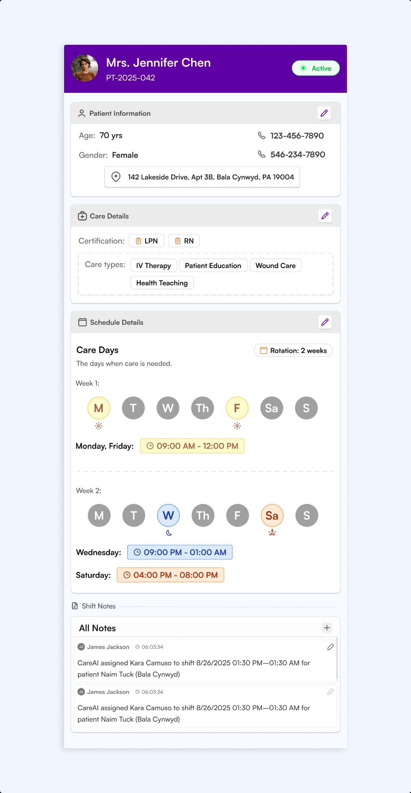
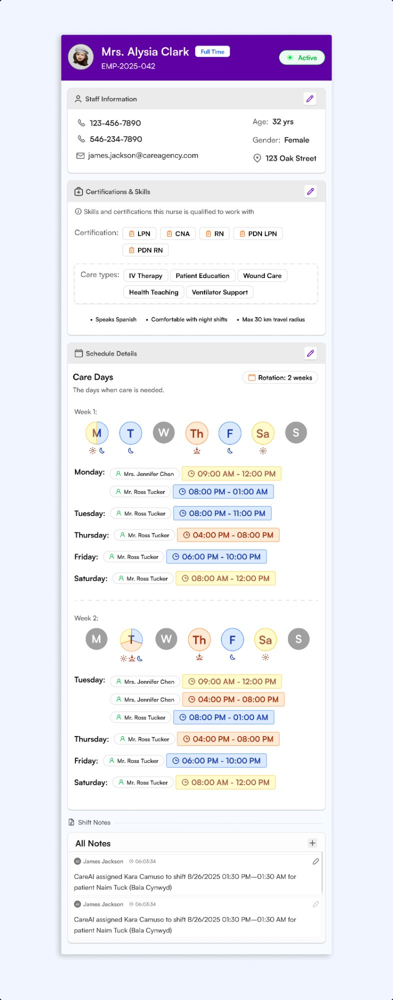
The hardest design challenge of the internship. A single day can contain 2 or 3 separate shifts — morning, evening, night. Standard calendar dot indicators break immediately. I designed a pie-chart circle system where each day indicator visually encodes multiple shift slots through color segments and geometry, with shift-type icons underneath for time-of-day context.
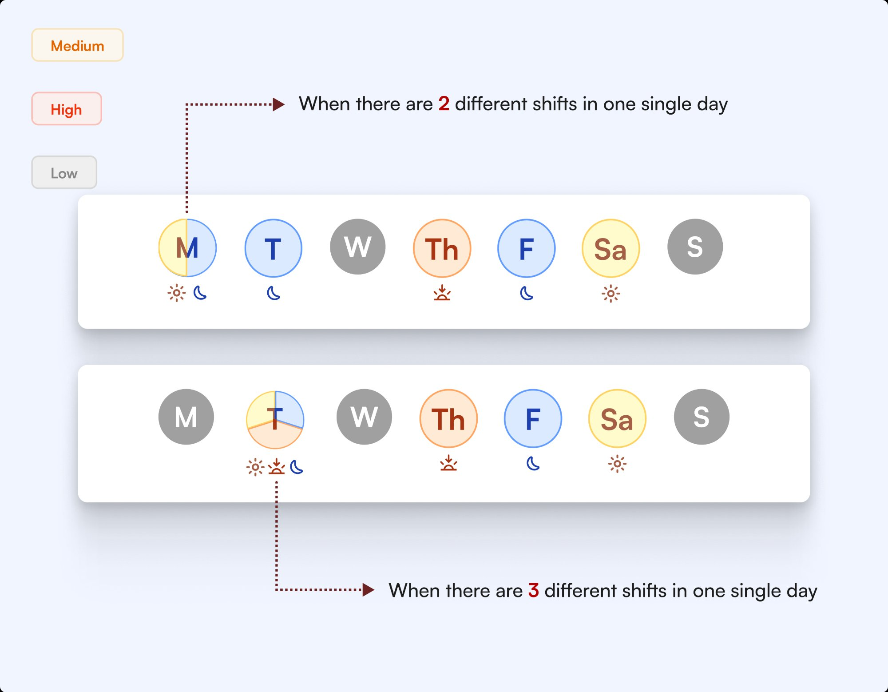
The split-circle indicator was invented, not borrowed. It needed to encode shift count + time-of-day simultaneously in a 32px target — no existing pattern did this.
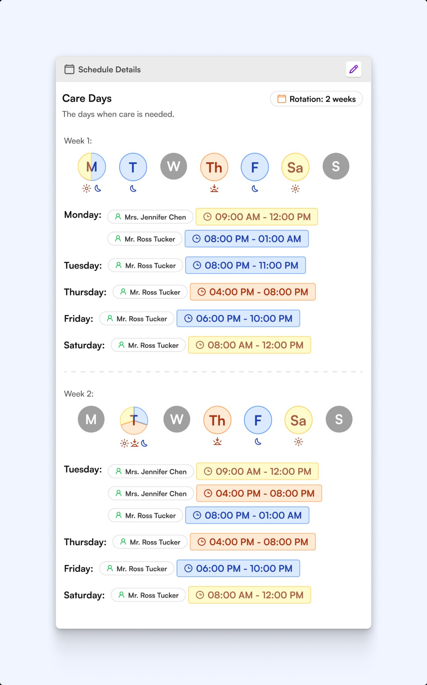
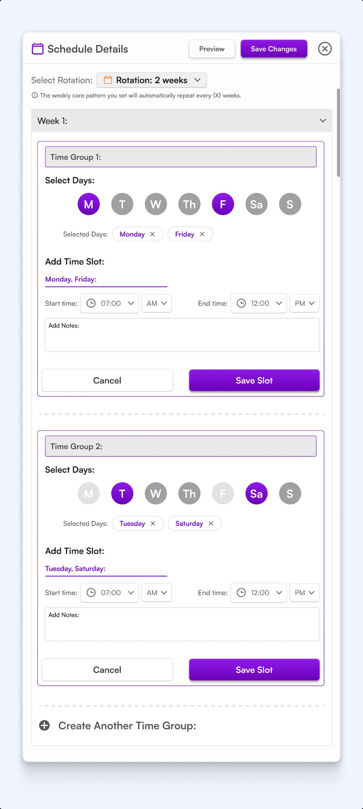
Circle segments represent the number of shifts on a given day — half-circle for 2 shifts, trisected for 3. Instantly scannable at a glance.
Time-of-day icons (sun, moon, twilight) below each day circle provide the shift-time context without using labels or tooltips.
2-week rotation is presented as two separate week rows, with the active week highlighted — reflecting how coordinators mentally model recurring care patterns.
A dense workforce table needed to be actionable, not just informational. The key addition: an inline schedule preview column so coordinators can read a nurse's availability pattern directly from the list — without navigating to the individual profile. Summary stat cards at the top give a real-time snapshot of workforce health.
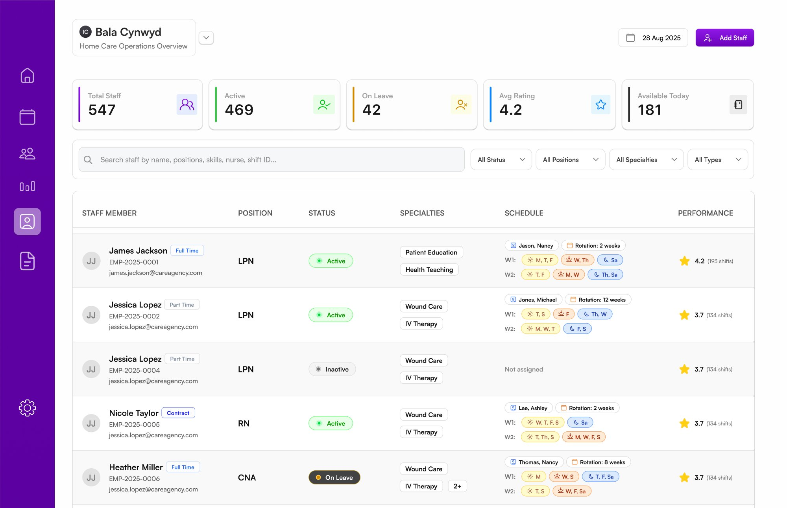
When AI agents act autonomously, trust erodes unless coordinators can see exactly what happened and why. The audit log design surfaces every system event — manual and AI-driven — in a searchable, faceted timeline. The "Performed by" field explicitly distinguishes between Coordinator, CareAI, Agent2, and Agent3. Accountability is built into the information architecture.
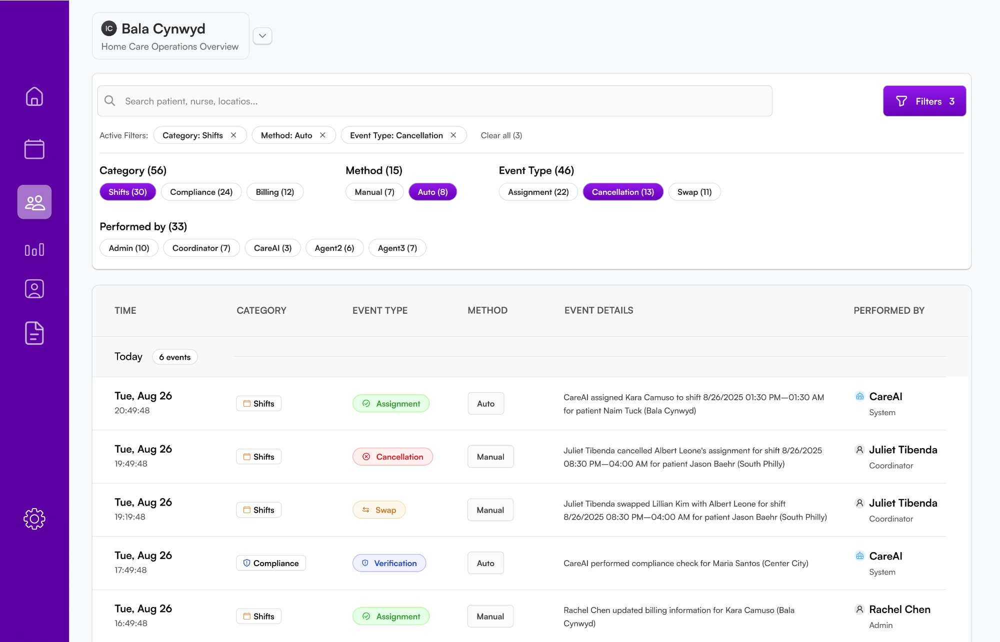
04 — Visual System
Across all 11 screens, a coherent system holds everything together. These weren't aesthetic preferences — they were functional decisions grounded in how coordinators actually use the product.
Color semantics
Design principles
05 — UX Decisions
These weren't problems with obvious answers. Each required understanding both the user's cognitive state in that moment and the system constraints underneath the surface.
The unfilled shift state needed to feel urgent — coordinators must act — but not so alarming that they freeze. I used structural change instead of alarm patterns: the header turns red (not flashing), the action block is foregrounded (not a modal overlay), and two clear paths are offered — Manual or Auto-Assign. Urgency is expressed through prominence, not anxiety. The coordinator feels directed, not overwhelmed.
The answer was never show 10 equals. The Swap/Matches tab split separates intent before the user sees a list. Within each tab, nurse cards show exactly four signals — distance, past shifts, hours, match %. These are the actual criteria coordinators use; everything else is visible but de-emphasized. The goal isn't a complete record. It's a fast, confident decision.
Standard dot-indicator calendars break down immediately when a day has multiple shifts — they can't distinguish 1 shift from 3. I designed a pie-chart circle system where the circle is visually divided by the number of shifts it contains, each segment color-coded by time-of-day. Coordinators can read an entire two-week rotation in a single glance without opening any sub-components. Density, finally made scannable.
06 — Reflection
The most important design decision I made in these 4 months wasn't a colour choice or a layout — it was the decision to understand the system before opening Figma.
Quickflows.ai taught me that enterprise UX lives and dies by its state model. Every screen is a projection of an underlying entity graph, and if the designer doesn't understand that graph, the UI will mislead the people relying on it.
I also learned that density is not the enemy of clarity — it's the friend of experts. A coordinator managing 200 shifts a day doesn't want a simplified view. They want the right information, structured so they can move at speed. Designing for that is harder than designing for simplicity. And significantly more rewarding.